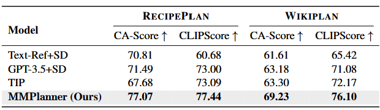
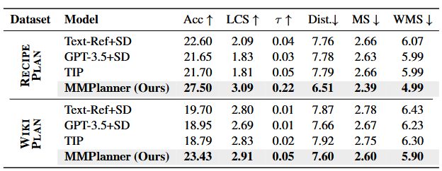

Key challenges in Multimodal Procedural Planning (MPP) include ensuring object-state consistency across multimodal steps and effectively evaluating planning accuracy, temporal coherence, and informativeness of the multimodal plan. While LLMs improve textual steps, visual object-state alignment and robust evaluation remain underexplored. We propose MMPlanner, a zero-shot framework using LLMs with Object State Reasoning Chain-of-Thought (OSR-CoT) prompting to generate plans with accurate object-state transitions. To assess multimodal plan quality, we introduce two metrics, T-PlanScore and CA-Score, along with an evaluation task, VS-Ordering, measuring planning accuracy, cross-modal alignment, and temporal coherence collectively. Experiments demonstrate that MMPlanner surpasses state-of-the-art methods, improving textual evaluation by 6.8%, cross-modal alignment by 11.9%, and visual step ordering by 26.7%.
MMPlanner consists of three stages: (1) a Textual Plan Generator that produces a sequence of textual steps from the goal, (2) an Image Description Generator that creates image descriptions from the textual steps, incorporating both explicit and implicit object state changes, and (3) a Visual Plan Generator that generates the visual plans from the image descriptions.
Textual Evaluation on RecipePlan and WikiPlan. MMPlanner consistently achieves higher scores, maintaining textual planning accuracy, while improving cross-modal alignment between visual and textual steps.
Step-level cross-modal evaluation. MMPlanner achieves substantial improvements across metrics, indicating better visual-textual alignment compared to other baselines.
Visual sequence ordering (VS-Ordering) performance comparison over baselines. MMPlanner consistently outperforms baselines, demonstrating its ability to generate coherent and informative visual steps.
How to make broiled grapefruit recipe?along with T-PlanScore, CA-Score, and VS-Ordering metrics. Explicit state changes refer to changes that are explicitly present in both textual and visual steps. Implicit state changes refer to changes that are not explicitly present in the textual steps but need to be present in the visual steps. (Left) TIP fails to incorporate explicit and implicit object state changes into the visual steps (red texts and bboxes). (Right) Conversely, MMPlanner incorporates both explicit (blue texts and bboxes) and implicit (green texts and bboxes) state changes of the associated objects into the visual steps. Implicit state changes present/not present in the visual step are mentioned in the orange text.
@article{tabassum2025mmplanner,
title={MMPlanner: Multimodal Procedural Planning with Chain-of-Thought Object State Reasoning},
author={Tabassum, Afrina and Guo, Bin and Ma, Xiyao and Eldardiry, Hoda and Lourentzou, Ismini},
journal={arXiv preprint arXiv:},
year={2025}
}